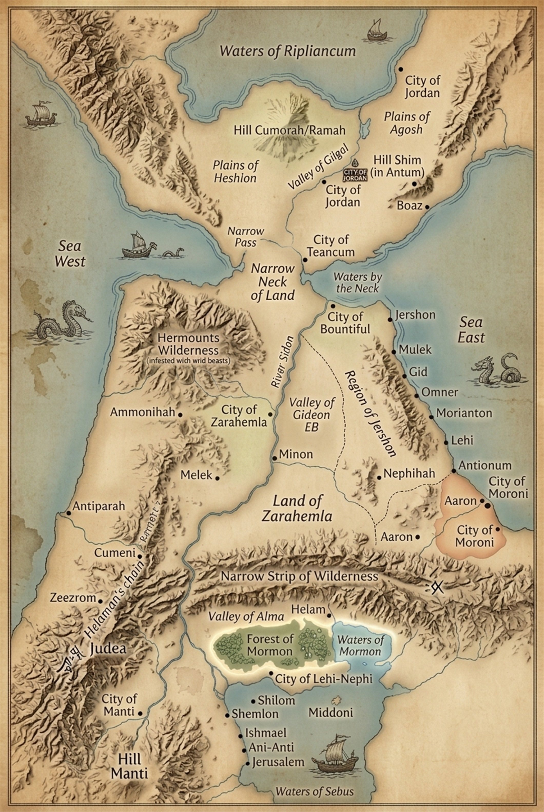

Map Pos: X: 0.0% | Y: 0.0%
(Click to copy)
AD 1
Era: Birth of Christ (Zionic Hope & Peace)
88 / 94 Sites ActiveDay, night, and day as one; Nephites and Lamanites unite against secret combinations; thriving civilization